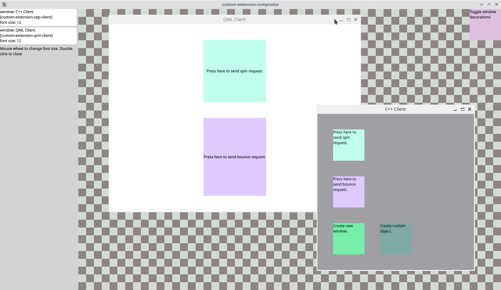

Custom Extension
Custom Extension shows how to implement a custom Wayland extension.
It's easy to write new extensions for Wayland. They are defined using a XML-based format and the wayland-scanner tool converts this to glue code in C. Qt expands on this with the qtwaylandscanner, which generates additional glue code in Qt and C++.

The Custom Extension example shows how to use these tools to extend the Wayland protocol and send custom requests and events between a Wayland client and a server.
The example consists of four items:
- The definition of the protocol itself.
- A compositor that supports the extension.
- A C++-based client that supports the extension.
- A QML-based client that supports the extension.
The Protocol Definition
The XML file custom.xml defines the protocol. It contains an interface called "qt_example_extension". This is the name which will be broadcast from the server and which the client will attach to in order to send requests and receive events. This name should be unique, so it is good to use a prefix that sets it apart from official interfaces.
An interface typically consists of two types of remote procedure calls: requests and events. "Requests" are calls the client makes on the server-side, and "events" are calls the server makes on the client-side.
The example extension contains a set of requests which instructs the server to apply certain transforms to the client window. For instance, if the client sends a "bounce" request, then the server should respond to this by making the window bounce on the screen.
Similarly, it has a set of events which the server can use to provide instructions for the client. For instance, the "set_font_size" event is an instruction for the client to set its default font size to a specific size.
The protocol defines the existence of requests and events, as well as the arguments they take. When qtwaylandscanner is run on it, it will generate the code needed to marshall the procedure call and its arguments and to transmit this over the connection. On the other end, this becomes a call to a virtual function which can be implemented to provide the actual response.
In order to have qtwaylandscanner run automatically as part of the build, we use the CMake functions qt_generate_wayland_protocol_server_sources() and qt_generate_wayland_protocol_client_sources() for generating the server-side and client-side glue code, respectively. (When using qmake, the WAYLANDSERVERSOURCES and WAYLANDCLIENTSOURCES variables achieve the same.)
The Compositor Implementation
The Compositor application itself is implemented using QML and Qt Quick, but the extension is implemented in C++.
The first step is to create a subclass of the glue code generated by qtwaylandscanner so that we can access its functionality. We add the QML_ELEMENT macro to the class in order to make it accessible from QML.
class CustomExtension : public QWaylandCompositorExtensionTemplate<CustomExtension> , public QtWaylandServer::qt_example_extension { Q_OBJECT QML_ELEMENT
In addition to inheriting from the generated class, we also inherit the class QWaylandCompositorExtensionTemplate which provides some additional convenience when dealing with extensions, using the Curiously Recurring Template Pattern.
Note that the QWaylandCompositorExtensionTemplate must be first in the inheritance list, since it is a QObject-based class.
The subclass has re-implementations of virtual functions in the generated base class, where we can handle requests issued by a client.
protected: void example_extension_bounce(Resource *resource, wl_resource *surface, uint32_t duration) override;
In these re-implementations, we simply translate the request to a signal emission, so that we can handle it in the actual QML code of the compositor.
void CustomExtension::example_extension_bounce(QtWaylandServer::qt_example_extension::Resource *resource, wl_resource *wl_surface, uint32_t duration) { Q_UNUSED(resource); auto surface = QWaylandSurface::fromResource(wl_surface); qDebug() << "server received bounce" << surface << duration; emit bounce(surface, duration); }
In addition, the subclass defines slots for each of the events, so that these can be either called from QML or be connected to signals. The slots simply call the generated functions which send the events to the client.
void CustomExtension::setFontSize(QWaylandSurface *surface, uint pixelSize) { if (surface) { Resource *target = resourceMap().value(surface->waylandClient()); if (target) { qDebug() << "Server-side extension sending setFontSize:" << pixelSize; send_set_font_size(target->handle, surface->resource(), pixelSize); } } }
Since we added the QML_ELEMENT macro to the class definition (and added the corresponding build steps to the build system files), it can be instantiated in QML.
We make it a direct child of the WaylandCompositor object in order for the compositor to register it as an extension.
CustomExtension {
id: custom
onSurfaceAdded: (surface) => {
var item = itemForSurface(surface)
item.isCustom = true
}
onBounce: (surface, ms) => {
var item = itemForSurface(surface)
item.doBounce(ms)
}
onSpin: (surface, ms) => {
var item = itemForSurface(surface)
item.doSpin(ms)
}
onCustomObjectCreated: (obj) => {
var item = customObjectComponent.createObject(defaultOutput.surfaceArea,
{ "color": obj.color,
"text": obj.text,
"obj": obj } )
}
}
function setDecorations(shown) {
var n = itemList.length
for (var i = 0; i < n; i++) {
if (itemList[i].isCustom)
custom.showDecorations(itemList[i].surface.client, shown)
}
}
The object has signal handlers for the requests it may get from the client and reacts to them accordingly. In addition, we can call its slots to send events.
onFontSizeChanged: {
custom.setFontSize(surface, fontSize)
}
The C++ Client Implementation
Both clients share the C++ implementation of the interface. Like in the compositor, we make a subclass of the generated code which also inherits from a template class. In this case, we inherit QWaylandClientExtensionTemplate.
class CustomExtension : public QWaylandClientExtensionTemplate<CustomExtension> , public QtWayland::qt_example_extension
The approach is very similar to that of the compositor, except inverted: Requests are implemented as slots which call the generated functions, and events virtual functions which we re-implement to emit signals.
void CustomExtension::sendBounce(QWindow *window, uint ms) { QtWayland::qt_example_extension::bounce(getWlSurface(window), ms); }
The client code itself is very simple and only intended to show how to trigger the behavior. In a custom paint event, it draws a set of rectangles and labels. When any of these are clicked, it issues requests to the server.
void mousePressEvent(QMouseEvent *ev) override
{
if (rect1.contains(ev->position()))
doSpin();
else if (rect2.contains(ev->position()))
doBounce();
else if (rect3.contains(ev->position()))
newWindow();
else if (rect4.contains(ev->position()))
newObject();
}
To update the font size when the set_font_size event is received, the signal in our extension class is connected to a slot.
connect(m_extension, &CustomExtension::fontSize, this, &TestWindow::handleSetFontSize);
The slot will update the font size and repaint the window.
The QML Client Implementation
The QML client is similar to the C++ client. It relies on the same implementation of the custom extension as the C++ client, and instantiates this in QML to enable it.
CustomExtension {
id: customExtension
onActiveChanged: {
registerWindow(topLevelWindow)
}
onFontSize: (window, pixelSize) => {
topLevelWindow.fontSize = pixelSize
}
}
The UI consists of some clickable rectangles, and uses TapHandler to send the corresponding requests when a rectangle is clicked.
TapHandler {
onTapped: {
if (customExtension.active)
customExtension.sendBounce(topLevelWindow, 1000)
}
}
For simplicity, the example has been limited to only demonstrate the bounce and spin requests as well as the set_font_size event. Adding support for the additional features is left as an exercise for the reader.